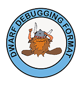

|  | The
DWARF Debugging Standard
|
||||
|---|---|---|---|---|---|
| HOME |
SPECIFICATIONS |
FAQ |
ISSUES |
|
February 15, 2017
DWARF is used by a wide range of compilers and debuggers, both proprietary and open source, to support debugging of Ada, C, C++, Cobol, FORTRAN, Java, and other programming languages. DWARF V5 adds support for new languages like Rust, Swift, Ocaml, Go, and Haskell, as well as support for new features in older languages. DWARF can be used with a wide range of processor architectures, such as x86, ARM, PowerPC, from 8-bit to 64-bit. DWARF is the standard debugging format for Linux and several versions of Unix and is widely used with embedded processors. DWARF is designed to be extended easily to support new languages and new architectures. The DWARF Version 5 Standard has been in development for six years. DWARF Committee members include representatives from over a dozen major companies with extensive experience in compiler and debugger development. Version 5 incorporates improvements in many areas: better data compression, separation of debugging data from executable files, improved description of macros and source files, faster searching for symbols, improved debugging of optimized code, as well as numerous improvements in functionality and performance. The DWARF Version 5 Standard can be downloaded without charge from the DWARF website (dwarfstd.org). Additional information about DWARF, including how to subscribe to the DWARF mailing list, can also be found on the website. |
|
All logos and trademarks in this site are property of their respective
owner. The comments are property of their posters, all the rest © 2007-2022 by DWARF Standards Committee. |